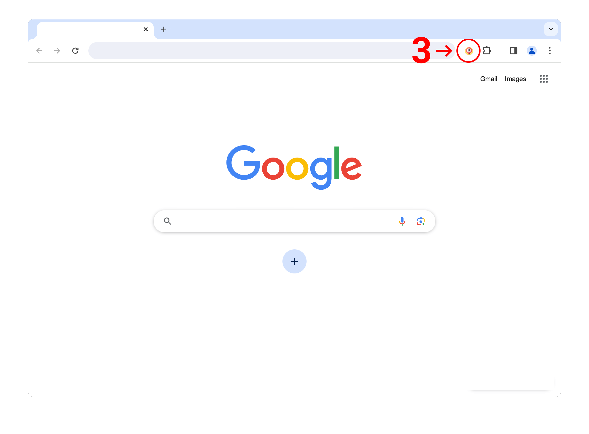

Image Extractor has been installed
Click the puzzle piece (1) in the top right of your browser. Then, click the little pin (2) next to the extension:
Right-click on the image or background and select (3) Extract Image to start extracting images:
If the right-click is blocked, left-click (4) on the Image Extractor icon in the top right of your browser, and then right-click (5) on the image, and select Extract Image to start extracting images: